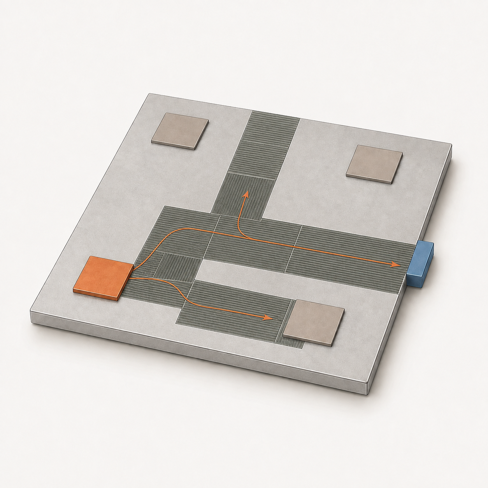
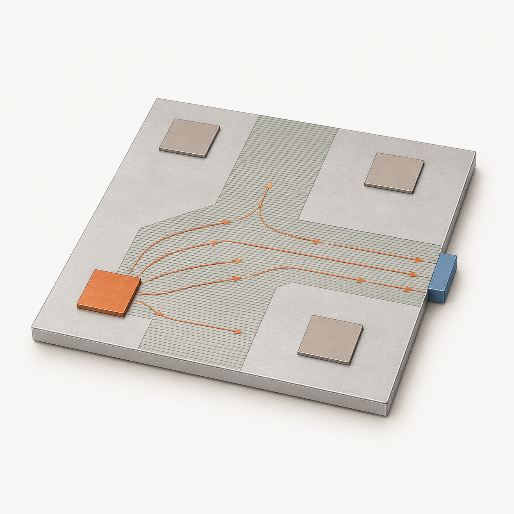
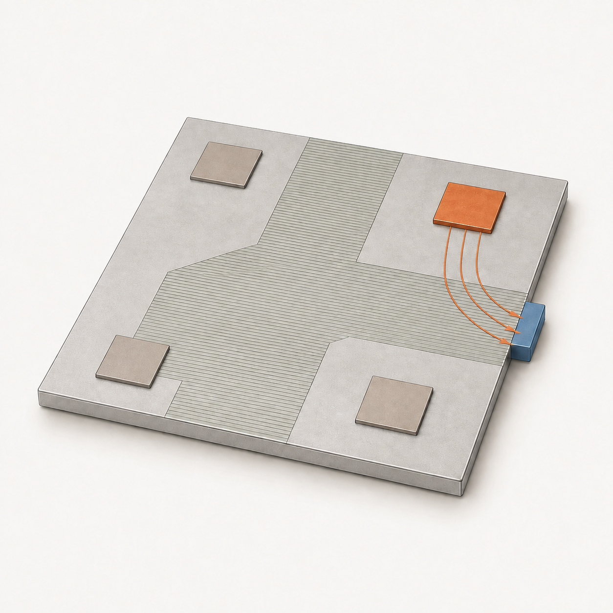
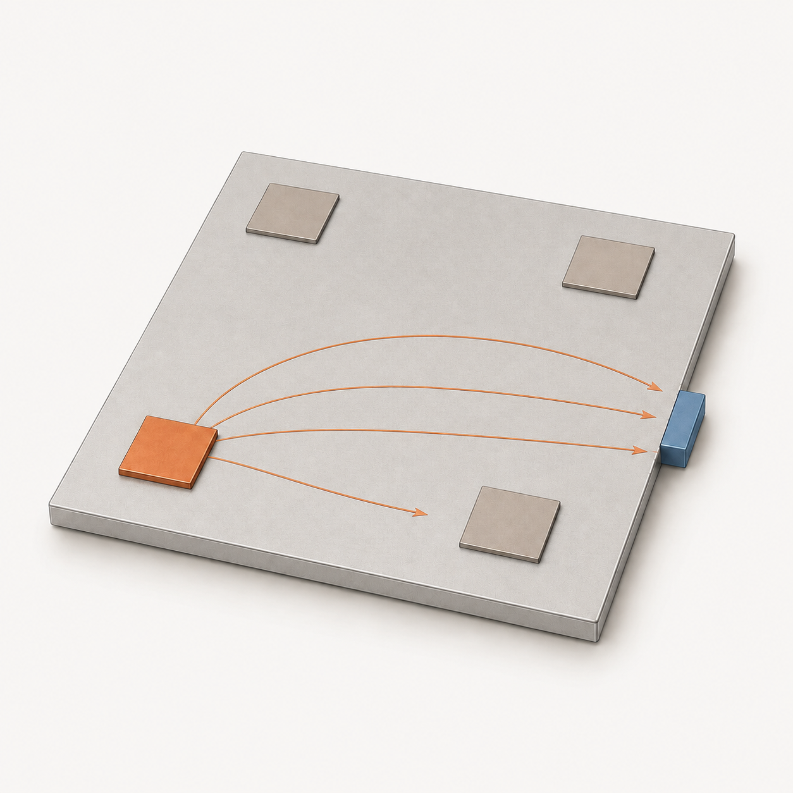
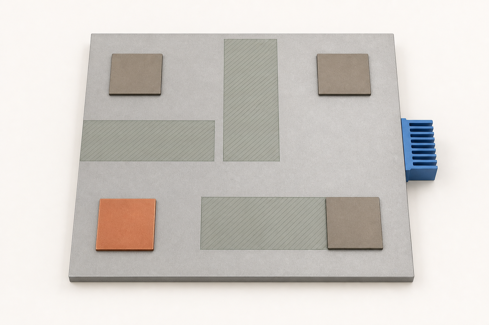
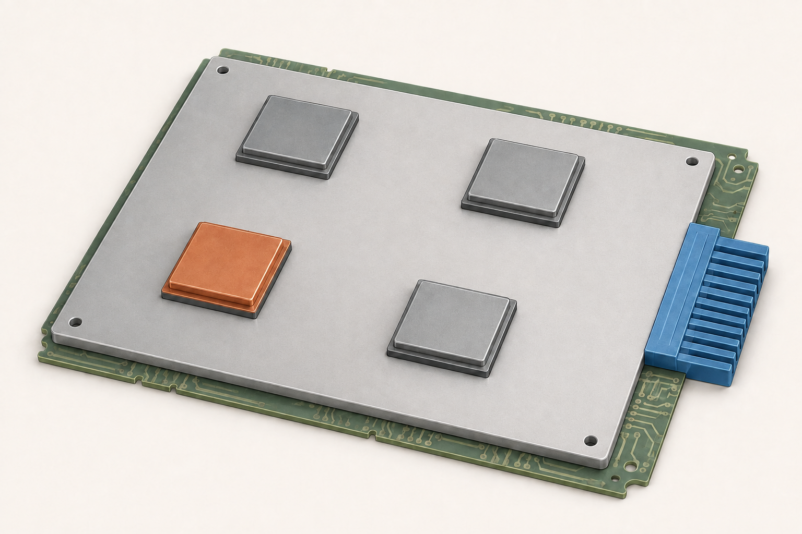
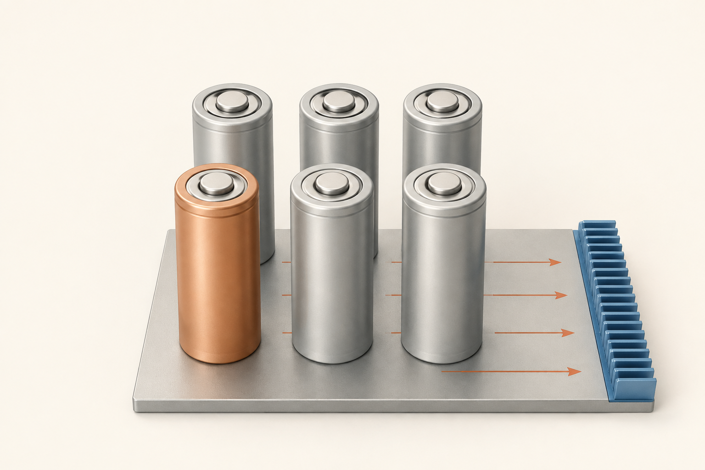
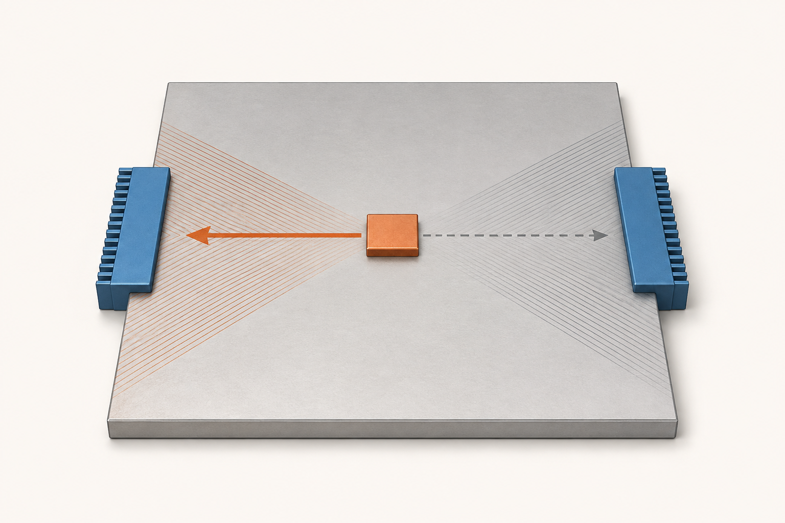

Один раз настроили — дальше работает как есть

Материал и его расположение не меняются. Когда активный источник смещается, тепло распределяется иначе, но сама конструкция остаётся прежней.
Статические и реконфигурируемые структуры для изменяющихся тепловых нагрузок
Как отводить тепло, если самая горячая область всё время меняется?
Готовый маршрут не задаём — его ищет алгоритм. Сначала найдём одну структуру для разных нагрузок, затем проверим пользу переключения её участков.
Разобраться в идееПока это концепция: расчёты — следующий шаг.


Слева нагревается один из четырёх источников. Тепло уходит к синему участку на правом краю.
В процессоре или силовом модуле разные участки нагреваются в разное время. Можно заранее найти одну конструкцию для всех режимов. А можно попробовать подстраивать её тепловые свойства под текущую нагрузку.

Материал и его расположение не меняются. Когда активный источник смещается, тепло распределяется иначе, но сама конструкция остаётся прежней.
Внешняя форма остаётся той же. Меняется проводимость внутри пластины — и вместе с ней предпочтительное направление отвода тепла.
Сравним их на одинаковых нагрузках, с одинаковым количеством функционального материала и одинаковыми доступными состояниями проводимости.
Мы задаём источники тепла, место отвода, доступный объём материала и критерий качества. Алгоритм пробует разные размещения, оценивает перегрев и изменяет удачные варианты. Рисунок пути заранее не задан.
Поколение 0. Разрозненные участки: отправная точка условного поиска.
Кандидаты отличаются положением участков и их состояниями. Количество материала у всех одинаковое.
Лучше тот вариант, у которого ниже максимальная температура на худшей проектной истории.
Удачные размещения дают начало новым кандидатам. Проверяем переносы участков и смену направлений проводимости.
Короткие связи, общие магистрали, ветвления или рассеянные включения — форму покажет поиск.
«Выращивание» — только образное название поиска: мы переставляем ячейки, а не моделируем биологический рост.

Один материал по всей площади. С него начинается сравнение.
Алгоритм ищет размещение под один неподвижный источник. Найденные свойства фиксируются.
Тот же поиск учитывает сразу несколько режимов. Получаем сильную неизменную альтернативу.
Ищем размещение и состояния групп по текущему нагреву. Геометрия при работе остаётся постоянной.
Схемы поясняют четыре ступени. Реальные формы для одного и нескольких режимов ещё предстоит найти.
↺ Оценка возвращается в поиск: отбираем кандидатов для следующего поколения.
Сначала оцениваем структуру для одного режима, затем — для всего проектного набора. На отдельных проверочных историях кандидатов уже не подбираем.
Идея появилась не на пустом месте. В этих работах уже меняют теплопроводность, направляют тепловой поток и ищут необычные структуры. Для нашей задачи важны и достижения, и ограничения каждого подхода.
В плёнке LaNiOₓ проводимость меняют через содержание кислорода. Состояния обратимы, но записывают и измеряют их при разных температурах. Независимое управление множеством участков здесь ещё не показано.
DOI ↗Авторы повторяемо переключают тепловые свойства плёнки оксида церия. Это полезный пример, хотя возможности тонкой плёнки нельзя напрямую переносить на целую охлаждающую пластину.
DOI ↗Магнитное поле поворачивает проводящий наполнитель в композите и помогает подстраиваться под нагрев. Пока управление общее для образца и требует расплавленной среды; преимущество перед оптимизированной статикой не установлено.
DOI ↗Из медно-полимерных элементов собирают структуры, по-разному отклоняющие тепловой поток. Направление можно менять, но для этого образец приходится пересобирать вручную.
DOI ↗Предложен массив, в котором свет меняет локальные тепловые связи. Пространственное программирование уже есть в теории; работающий массив в этой публикации не изготовлен.
DOI ↗Тепло перераспределяют между фиксированными выходами с помощью электрического управления. Это работающий пример маршрутизации, но ему нужно питание: его нельзя приравнять к нашей проводящей пластине.
DOI ↗Авторы ищут распределение проводимости и теплоёмкости под заданный переходный процесс. Значит, с меняющимся нагревом можно работать и без переключения свойств. Полный текст доступен не целиком.
DOI ↗Статическую структуру подбирают с учётом движения источника тепла. Для нас это важный ориентир: сравниваться нужно с продуманной конструкцией, а не только с простейшим теплоотводом.
DOI ↗ · Страница статьи ↗Аналитический метод помогает перейти от нужных направленных свойств к слоистой структуре. Изготовленные металлические устройства проверены в эксперименте — сложные тепловые функции доступны и фиксированной конструкции.
DOI ↗GA (генетический алгоритм) меняет размещение проводящих ячеек в задаче отвода тепла к участку границы. Это близкая основа нашей простой сеточной модели.
DOI ↗Генетический алгоритм подбирает структуру через Space Colonization Algorithm (алгоритм освоения пространства). Форма возникает внутри выбранного семейства ветвлений. Доступ к полному тексту ограничен.
DOI ↗Параметрические L-системы (грамматики построения формы) задают кандидатов для генетического поиска. Результаты сравниваются с прямым кодированием и плотностной оптимизацией.
DOI ↗Эволюционный алгоритм ищет структуру с нужным температурным полем. Сам метод поиска уже применяется к тепловым задачам. Доступ к тексту ограничен; выводов о превосходстве алгоритма мы не делаем.
DOI ↗Все 13 источников — журнальные исследовательские статьи. Метаматериалом называют структуру, чьи свойства задаются расположением и устройством её элементов.
Эволюционная оптимизация тепловых структур уже существует. Мы используем её как инструмент синтеза и исследуем добавочную пользу переключения в одинаковых условиях.
Посмотрим, как меняется рисунок проводящих областей при одном и нескольких режимах нагрева. Заранее не выбираем ни дерево, ни сеть.
Насколько отличается максимальная температура от результата робастной статики — одной структуры, уже найденной для разных нагрузок?
Проверим вместе три вещи: насколько сильно меняется проводимость, сколько участков можно управлять независимо и как меняется нагрев.
| Направление | Изученность | Роль в работе |
|---|---|---|
| Управляемая теплопроводность | Высокая | Физическая предпосылка |
| Thermal routing (маршрутизация тепла) | Высокая | Концептуальный предшественник |
| Сильная статика ↔ реконфигурация | Средняя | Основной исследовательский вопрос |
| Число управляемых областей | Средняя | Дополнительная исследуемая зависимость |
Это предварительная оценка по собранной литературе. Похожие сравнения уже существуют, а часть полных текстов пока недоступна — поэтому мировой приоритет мы не заявляем.
Будем менять эти параметры и смотреть, когда появляется выигрыш. Заранее неизвестно, сколько управляемых групп окажется достаточно.
Во сколько раз участок лучше проводит тепло в выбранном направлении. В нашей модели это отношение также задаёт его анизотропию — различие свойств по направлениям.
Ползунок лишь поясняет контраст. Значения для расчётов: 1, 2, 4, 8 и 16.
Участки одной группы переключаются вместе. В режиме full (полное управление) каждый из 16 участков получает отдельную команду.
4 группы: по 4 участка с общим состоянием.
Одинаковый номер — одна команда для нескольких участков.
Равномерная: источники греются одинаково.
Выраженная: один источник сильнее остальных.
Локальная: работает один источник.
Положение самого горячего источника меняется по заданной истории. Суммарная энергия одинакова.
Пока это диапазон для модели. Контрасты 8 и 16 помогают посмотреть, что могло бы дать более сильное управление. Мы не приписываем эти свойства одному готовому материалу.
При контрасте 1 все состояния одинаковы — различий в температуре быть не должно. Полное управление даст ориентир возможностей, но лучший найденный вариант ещё не означает абсолютный предел.
Начнём с benchmark (тестовой задачи): квадратная пластина, четыре источника и один общий теплоотвод. По очереди будем менять положение самого мощного источника и интенсивность нагрева.

Ищем максимум по всей пластине и за всё время нагрева. Главный результат — насколько он отличается у двух конструкций на худшей из проверочных историй.
Пассивная матрица без функциональных включений.
Простой заданный путь с теми же 16 участками.
Алгоритм ищет структуру под один неподвижный источник. Диагностический этап.
Алгоритм ищет одну структуру по всем проектным историям. Свойства постоянны.
Тот же класс поиска находит размещение и таблицу состояний для текущих нагрузок.
Обычному варианту дадим все шансы. Статическую структуру подбираем сразу для всех проектных нагрузок. Количество материала и доступные состояния проводимости у B1–B3 одинаковы.
На поиск B2-robust выделим не меньше тепловых расчётов, чем на B3. Повторим поиск, улучшим удачные решения и проверим, не может ли хороший вариант B3 работать так же хорошо с постоянными свойствами.
Проверим конструкцию на историях нагрева, которых не было при её подборе. Повторим поиск и уточним сетку и шаг времени. Выигрыш должен сохраняться и быть больше погрешности расчёта; также проверим баланс энергии и случай одинаковой проводимости.
Эволюционный поиск удобен для дискретных вариантов, но мы не считаем его заранее лучше градиентных методов. Размеры и свойства конкретного прототипа пока не выбраны, поэтому первая задача использует безразмерные величины.
Во всех основных сравнениях установлены 16 функциональных участков. Количество материала не становится четвёртой переменной исследования.
Основной пример — электроника. Ещё два случая помогут наглядно проверить, насколько идея переносится на другие задачи.

CPU/GPU (центральные и графические процессоры) и силовые модули. Hotspots (локальные зоны нагрева) перемещаются вместе с нагрузкой — под этот случай и строится основная задача.

Разные ячейки нагреваются неодинаково. Посмотрим, как пластина отводит тепло, когда самая горячая область меняется. В этой демонстрации учитываем только тепло, без электрохимии.

Thermal routing (маршрутизация тепла): один источник и два возможных выхода. Небольшой пример покажет выбор направления; рекуперация, то есть повторное использование тепла, остаётся возможным продолжением.
Иллюстрации объясняют возможные применения, а не показывают изготовленные устройства.
Карту условий: где переключение помогает, где почти ничего не меняет и где обычная конструкция справляется лучше.
Публикации, проверенные основания и ограничения выводов.
Нестационарная теплопроводность и проверки численного решения.
Статические и реконфигурируемые структуры в одном дискретном классе.
Рассчитанные поля на одинаковых шкалах и карты состояний материала.
Проверка B0–B3 на проектных и новых историях нагрева.
Контраст × число групп × изменчивость нагрева
Условия выигрыша, отсутствия различимого эффекта и проигрыша.
Сохранённые поколения и оценки кандидатов из реального поиска.
Связность, ветвление и сходство независимых запусков.
Найденное размещение B2-robust и его постоянные состояния.
Найденное размещение B3 и состояния при смене нагрева.
Поколение 0 → 20 → 100
Одинаковые шкалы для всех вариантов
Расположение функционального материала
Статика · робастная статика · реконфигурация
Контраст × число групп × изменчивость
Если выигрыш повторяется, покажем, при каком контрасте и числе групп он возникает. Это даст первые ориентиры для свойств будущего материала.
Если хорошая статическая структура почти не уступает, опишем, где усложнение не приносит заметной пользы. Такой результат тоже помогает принять инженерное решение.
Оба исхода полезны для ВКР. Если эффект сравним с погрешностью, так и скажем. Вывод будет относиться к проверенной модели, а не ко всем возможным тепловым системам.
Сначала разберёмся с одной задачей настолько хорошо, чтобы выводы можно было проверить.